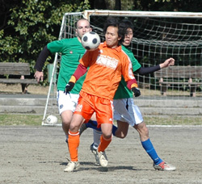
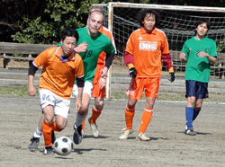

|
OiFuto, Saturday 21st February
A well fought draw between the n.2 and n.3 teams of division Two entertained the two spectators at Oi Futo dirt this afternoon.
Back in September, the Dutch Embassy easily disposed of a good Zion team thanks to their swift strikers, but this time the Zion boys put a much better performance and showed significant skill with the ball.
To be fair, the Embassy found themselves ahead in the first half as skipper Jan transformed a penalty kick around minute 20, but quixotic refereeing made it even by assigning a PK to the Zion lads just a few minutes later with the first half closing on 1-1.
The second half saw a super-charged Zion side working the Embassy on both sides and actahcing the oranje defence asleep as a header from the back corner pushed them ahead 2-1.
However, with just a few minutes to go, the Dutch transformed a free kick from 35-40 meters away, not without the help of the Zion keeper (thanks! ) setting the final score to a 2-2 draw.
With the match now concluded, Zeon appear to have solidified their position as second force in the league (FC International already pocketed the first position eons ago). But again, dear reader, who really wants to play ego challenged division one teams anyway?
Report by L. Van der Limentanen.
|